Die Welt von YarnTale entfaltet sich als ein einziges lebendiges Anwesen — nicht groß in der Ausdehnung, aber tief im Sinn. Jeder Pfad wurde hier viele Male begangen, jeder Ort erinnert sich an Schritte, Stimmen und getroffene Entscheidungen. Geografie ist in YarnTale nicht nur Land — sie ist Erinnerung, Charakter und Konsequenz.
Im Zentrum des Anwesens steht das Herrenhaus — ein solides, geräumiges Haus, das einst dem früheren Besitzer des Hofes gehörte. Nach örtlichen Maßstäben ist es groß: Es verfügt über ein Arbeitszimmer mit Bibliothek, ein Wohnzimmer, ein Esszimmer, eine Küche mit Vorratskammer und mehrere Schlafzimmer.
Heute lebt hier Herr Wassili Woldemarowitsch, ein Mann im Ruhestand, der sich bewusst für ein ruhiges Leben fern von Lärm und Ehrgeiz entschieden hat. Seine Enkelin kommt zu Besuch, und das Haus füllt sich nicht mit Status, sondern mit Wärme, Büchern und Erinnerung. Hier, in der Bibliothek, sammeln sich Geschichten; hier beginnen und lösen sich Konflikte; hier wird die Vergangenheit des Anwesens bewahrt. Das Herrenhaus ist das Herz der Welt von YarnTale.
In der Nähe steht das Häuschen von Onkel Lesha — bescheiden, warm und verlässlich. Onkel Lesha und Tante Paulina leben hier einfach, ehrlich und beständig. Der Duft von Brot liegt in der Luft, und die tägliche Arbeit verleiht dem Leben Würde. Dieses Haus ist der moralische Anker der Welt — ein Ort, zu dem man zurückkehrt, wenn das Gleichgewicht wiedergefunden werden muss.
Abseits liegt der Schweinestall, das Zuhause von Sau Martha und ihrem Sohn Peter. Martha ist im Herzen eine Tänzerin: Sie tanzt noch immer mit Freude und ohne jede Scheu, ungeachtet ihrer Größe. Bewegung ist ihr Glück und ihre Art zu leben. Peter, ihr schüchterner und verträumter Sohn, sucht nach Freundschaft und Sinn, während er seinen geliebten Ball fest an sich drückt. Humor, Verletzlichkeit und kindliche Unschuld leben hier Seite an Seite.
Der Geflügelhof ist niemals still. Hühner tratschen, Gänse streiten, Truthähne mischen sich ein, und Küken huschen umher wie unruhige Gedanken. Hier leben Henne Barbara, zerstreut, aber zutiefst hingebungsvoll; Küken Pip, auf der Suche nach seinem Platz in der Welt; Gans Clara, geprägt von stillem Verlust; und Gänschen Phil, der bereits schwere Prüfungen bestanden hat. Der Geflügelhof ist ein Ort schnellen Tempos, von Lärm, sozialen Konflikten und komischen Szenen.
Der halb vergessene Alte Schuppen bewahrt Spuren der Vergangenheit. Hier lebt Spinne Boris, ein zurückgezogener Philosoph mit scharfem Verstand und trockener Ironie. Hier begegnete einst die verlorene Seele von Grischka Jolkin der KI X-31, wodurch sein Weg vollendet wurde: Seine Seele fand Frieden und wurde entlassen. Der Schuppen ist kein Ort der Geister mehr, sondern ein Raum der Erinnerung, moralischer Prüfungen und nächtlicher Gespräche über Wahl, Schuld und Verantwortung.
Ein schmaler Pfad führt zu einer sonnendurchfluteten Blumenwiese. Hier wächst Gänseblümchen Rita, die nach Bewunderung und Aufmerksamkeit verlangt, während die Bienen Zhuzha und Mila unaufhörlich summen und Klatsch wie Nektar sammeln. Leichte Intrigen, Eitelkeit und Spielhaftigkeit bilden einen hellen Kontrast zu den dunkleren Erzählsträngen des Anwesens.
Weiter, im Schatten der Weiden verborgen, liegt der Teich, wo Frosch Lara lacht, planscht und die Spiegelungen des Mondes einfängt. Das Wasser bewahrt Pausen und den Atem der Geschichten und schenkt der Welt kurze Momente der Ruhe.
Nicht weit vom Teich erhebt sich die Alte Eiche. In ihrer Baumhöhle lebt Eule Sofia, weise und gastfreundlich, während unter ihren Wurzeln Fliegenpilz Timofey wohnt, dessen leise Monologe wie Wiegenlieder beruhigen. Dies ist das spirituelle Zentrum der Welt von YarnTale — ein Ort innerer Wahrheiten, geheimnisvoller Wälder und sanften Wissens.
Jenseits der Alten Eiche, verborgen im dichten Gestrüpp, liegt das Nest der Krähe Agatha.
Krähe Agatha ist eine aufmerksame Beobachterin und Hüterin glänzender Kleinigkeiten, in denen sie Spiegelungen fremder Schicksale erkennt. Von hier aus beobachtet sie das Leben des Anwesens und sammelt nicht nur Dinge, sondern auch Worte, Blicke und geheime Bindungen. Es ist ein Ort der Stille, der Einsamkeit und nicht immer ungefährlicher Verstrickungen.
Jenseits des Anwesens erstrecken sich Felder, Wälder und weiterführende Wege — ein Raum zukünftiger Geschichten, Prüfungen und Verwandlungen. Hier wird Mut gelernt, hier werden Entscheidungen getroffen, und hier spürt X-31 die feinen Psi-Felder möglicher Wege.
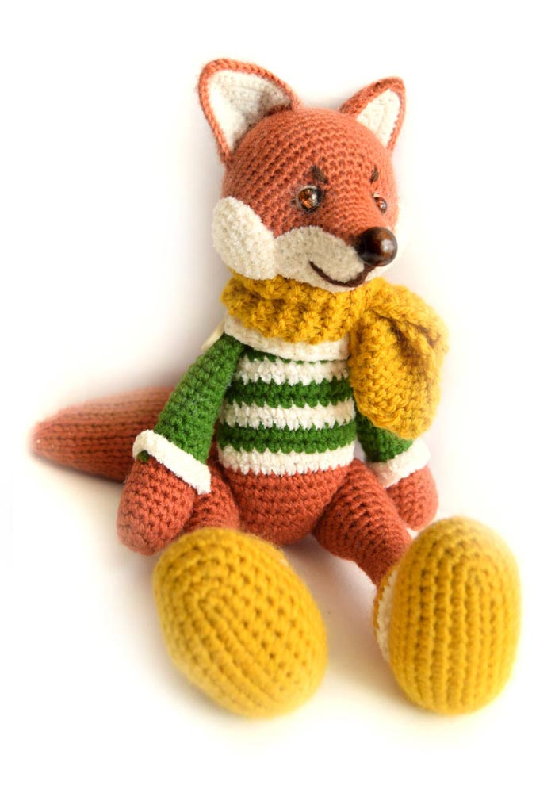 |
🦊 Liumy der kleine Fuchs
Liumy der kleine Fuchs ist verspielt, neugierig, liebenswert und unglaublich klug. Er liebt es zu rennen und zu spielen, endlose Fragen zu stellen — und kurz darauf ganz still dazusitzen, mit einer kleinen Sorgenfalte auf der Stirn, und über die Antworten nachzudenken. Liumy ist wie ein Sonnenstrahl: lebhaft, flink und mit leuchtenden Augen.
Er ist ein treuer Freund. Mit Pippa dem Hund jagt er über die Felder, mit Michel der Ratte spricht er über Geschichten, und am liebsten kuschelt er sich unter eine Decke in den Sessel neben Philomur der Katze. Obwohl er noch jung ist, zeigt Liumy bereits große Freundlichkeit — und einen überraschenden Funken Weisheit.
Liumy ist außerdem ein geborener Erfinder. Unermüdlich denkt er sich neue Spiele, Geschichten, Zeichnungen und fantasievolle Abenteuer für alle um ihn herum aus.
Zum Seitenanfang
|
🐱 Philomur die Katze
Philomur, der Kater, ist ein Geschichtenerzähler, Denker und Philosoph.
Er liebt Ruhe, Wärme und den langsamen, sanften Fluss des Lebens. Am liebsten döst er am Kamin mit einer Tasse warmer Milch und schnurrt dabei leise seine endlosen Geschichten, als erzähle er sie in erster Linie sich selbst.
Philomur erfindet wunderbare Geschichten — meist freundlich und lichtvoll, mit einem glücklichen Ende, manchmal jedoch nicht ganz; aber immer wahrhaftig. Er versucht nicht zu belehren und kümmert sich nicht darum, ob jemand zuhört oder ob seine Geschichten bemerkt werden. Die Worte kommen zu ihm so natürlich wie das Atmen, und er lässt sie einfach erklingen.
Und manchmal erwacht in ihm ein echter Abenteurer. Dann werden seine Geschichten lebendig, schnell und voller spielerischer Spannung: unerwartete Wendungen geschehen, Helden geraten in komische Abenteuer, und Philomur erzählt mit solchem Enthusiasmus, als erlebe er jedes Abenteuer gemeinsam mit seinen Zuhörern noch einmal.
Doch meist wählt er die Stille. In der Stille, so glaubt er, hört man die wichtigsten Worte am besten.
Dennoch hat Philomur treue Zuhörer. Seine Geschichten werden stets mit Liebe und Aufmerksamkeit von Michel, der Ratte, Liumy, dem Fuchs, und Pippa, dem Hund, gehört. Für sie sind seine Erzählungen nicht nur Fantasie, sondern ein stiller Zufluchtsort — ein Ort zum Innehalten und Nachdenken.
Michel schätzt Philomurs Geschichten so sehr, dass er beschloss, sie zu sammeln und als Buch zu veröffentlichen, um sie für die Zukunft zu bewahren.
Zum Seitenanfang
| 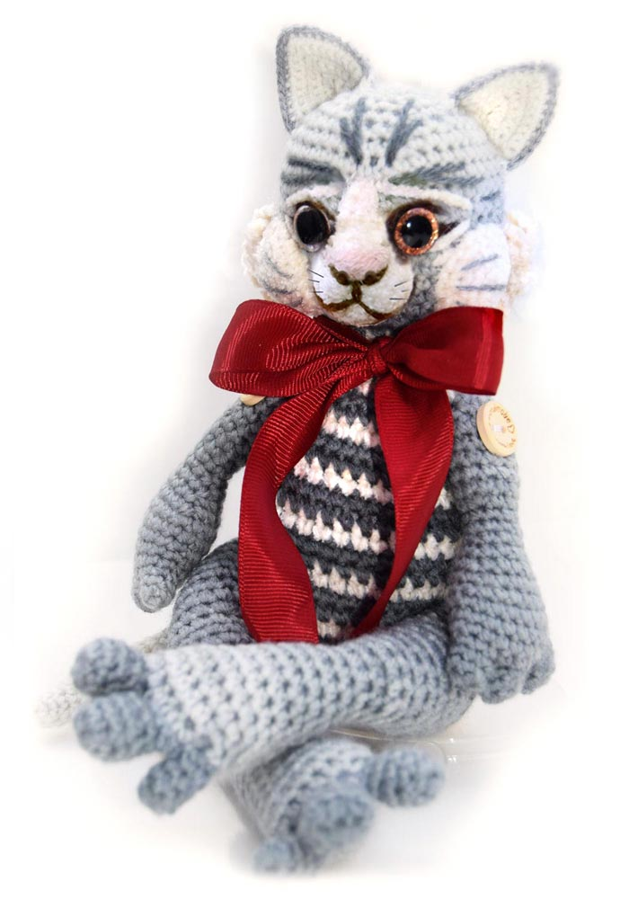 |
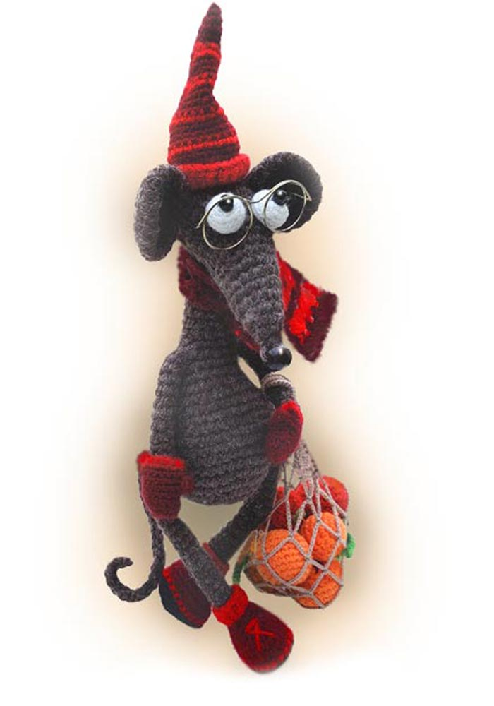 |
🐀 Michel, der Rattenjunge
Michel ist ein wahrhaft bemerkenswertes Wesen. Trotz seiner biologischen Natur ist er ein kultivierter Intellektueller, Bibliophiler und leidenschaftlicher Liebhaber der Literatur. Ohne seine runden Brillen, die er ständig zurechtrückt, und sein großes Notizbuch in Lederbindung ist Michel kaum vorstellbar.
Sein Markenzeichen ist eine Netz-Einkaufstasche voller leuchtender Orangen. Wo er sie im Klima von YarnTale findet, bleibt ein Geheimnis, doch ein zarter Zitrusduft kündigt stets seine Ankunft in der Bibliothek an.
Michel ist ein langjähriger und treuer Freund von Philomur der Katze. Er ist nicht nur Zuhörer — er ist Chronist. Mit außergewöhnlichem Gedächtnis und angeborenem Stilgefühl sammelt Michel Philomurs Geschichten und schreibt sie sorgfältig in sein Notizbuch.
Während er in der Bibliothek von Vasily Voldemarovich an dem Buch „Philomurs Geschichten“ arbeitet, verbringt Michel lange Stunden zwischen Wörterbüchern und alten Folianten und markiert die benötigten Seiten mit bunten Bonbonpapieren.
In der Welt des Anwesens ist Michel eine Stimme des Gewissens, der Kultur und der stillen Weisheit.
Zum Seitenanfang
|
🐣 Küken Pip
Das kleine Küken Pip ist gerade erst in die große, unbekannte Welt geschlüpft und macht sich mutig auf die Suche nach seiner Mama. Alles um ihn herum ist neu, hell und ein wenig beängstigend — doch sein Herz ist offen, neugierig und voller sanften Vertrauens.
Pip ist eine zarte, sensible Seele. Er glaubt leicht, fühlt tief und begegnet der Welt mit ehrlichem Staunen. Auf seiner Reise trifft er viele unterschiedliche Charaktere und lernt nach und nach, dass nicht jeder ihn auf die gleiche Weise versteht — doch jede Begegnung lehrt ihn etwas über Freundschaft, Güte und sich selbst.
Obwohl er klein und oft unsicher ist, besitzt Pip einen stillen Mut. Er geht weiter, selbst wenn ihm kalt ist, er Angst hat oder sich einsam fühlt — geleitet von einem einfachen, aber starken Wunsch: geliebt zu werden und dazuzugehören.
Zum Seitenanfang
| 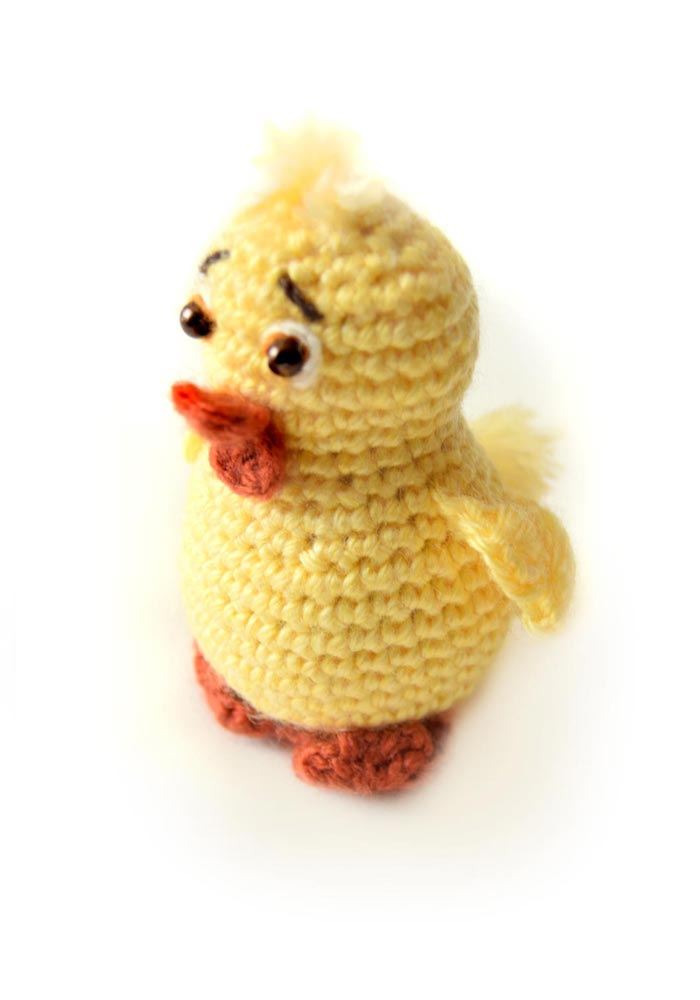 |
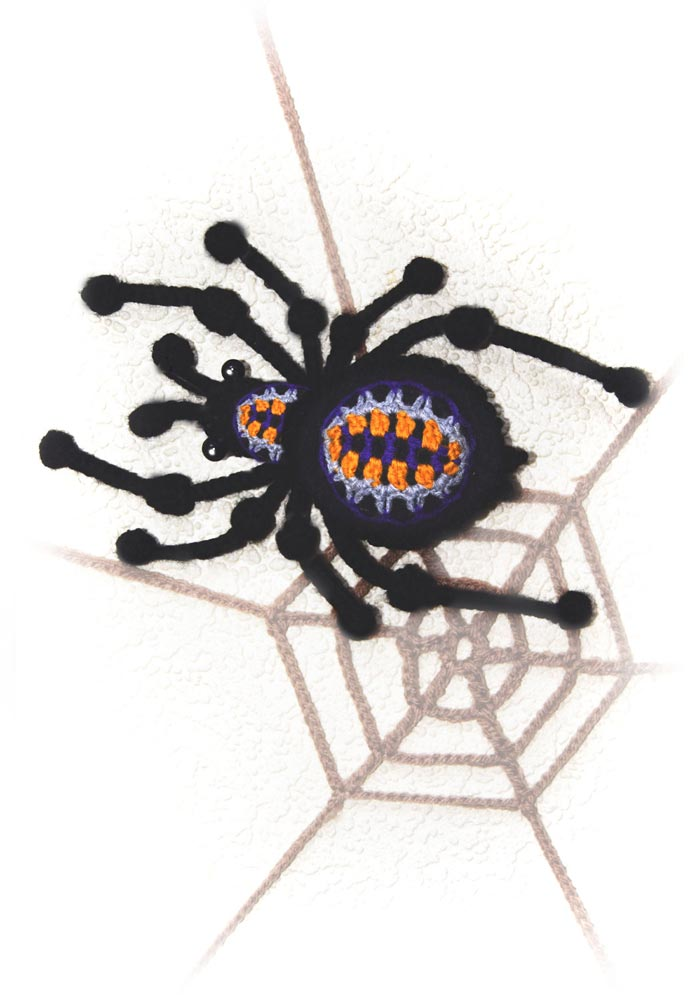 |
🕷️ Boris die Spinne
Boris lebt im Schuppen, verborgen in einem Spalt unter dem Dach hinter dichten Spinnweben. Etwas griesgrämig schätzt er Ruhe und Stille über alles. Doch böse ist er keineswegs — Boris ist klug, sogar weise, mit scharfem Verstand und reicher Lebenserfahrung.
Er macht sich keine Illusionen und erkennt stets den Kern der Dinge. Ihn zu täuschen ist nahezu unmöglich. Boris durchschaut Menschen und Ereignisse, versteht das Wesentliche und sagt die Wahrheit — auch wenn er es manchmal bereut.
Was andere denken, interessiert ihn kaum.
Sein Lieblingssatz lautet:
„Ihre Meinung, gnädige Frau (oder Herr), interessiert mich in keiner Weise.“
Als freiwilliger Einsiedler genießt Boris dennoch die kleinen Freuden des Lebens. Mit sanfter Ironie verspottet er Fitness-Trends und den Kult um Gesundheit.
„Warum hundert Jahre länger leben, wenn man am Ende ein hilfloses Wrack ist? Nein, danke.“
Der Schuppen ist sein Zuhause, seine Festung, seine ganze Welt. Er kennt jede Ritze und jedes Insekt — zumindest jene, die er noch nicht gegessen hat. Eine kluge Spinne sorgt für Vorrat.
Zum Seitenanfang
|
🌼 Rita das Gänseblümchen
Schön und ein wenig kokett ist Rita fröhlich, gesellig, aber auch etwas hochmütig und launisch. Sie kennt ihren Wert und liebt es, für ihre Schönheit bewundert zu werden.
Sie wächst auf einer sonnigen Wiese und ist mit den Bienen Zhuzha und Mila befreundet.
Rita beneidet Schmetterlinge schrecklich — schließlich können sie fliegen! Besonders klug ist sie nicht und fällt leicht auf Schmeicheleien herein. Jedes Kompliment glaubt sie aufrichtig, besonders wenn es ihr Aussehen betrifft.
Zum Seitenanfang
| 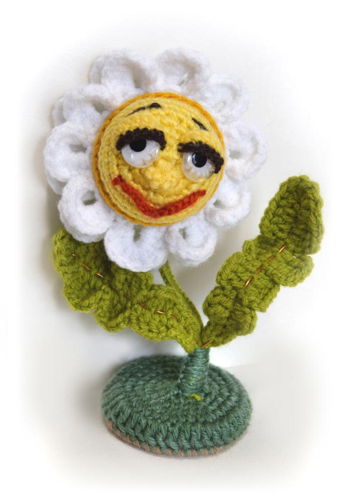 |
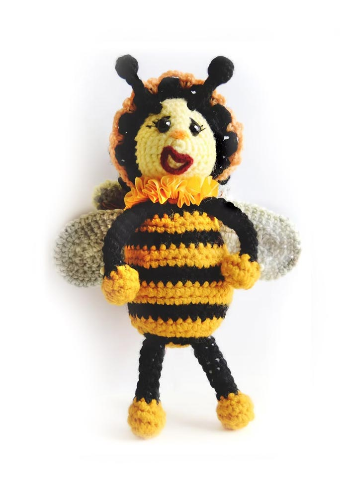 |
🐝 Die Bienen Zhuzha und Mila
Ritas enge Freundinnen — leichtsinnig, laut, geschäftig und furchtbar neugierig.
Den ganzen Tag sammeln sie nicht nur Nektar, sondern auch Klatsch und Tratsch und teilen ihn begeistert mit ihrer Gänseblümchenfreundin.
Zhuzha ist besonders gesprächig. Sie kann endlos um dein Ohr summen, selbst wenn alle längst genug davon haben. Sie ist hysterisch, ziemlich albern und merkt es nicht einmal. Zhuzha glaubt fest, dass jeder sehnsüchtig auf ihren Rat wartet.
Rita duldet sie — und mag sie manchmal sogar — weil Zhuzha nie aufhört, ihre Schönheit zu bewundern.
Einmal stach Zhuzha aus Versehen Küken Pip, weil sie ihn für eine neue „gelbe Blume“ hielt — einen weiteren Bewunderer von Rita. Natürlich tat es ihr danach leid. Nun ja … Fehler passieren.
Zum Seitenanfang
|
🐸 Laura der Frosch
Laura der Frosch ist eine sorglose, verspielte kleine Lachmacherin. Ein wenig frech, aber fröhlich und aufrichtig lebt sie in ihrer kleinen Teichwelt und fühlt sich dort vollkommen zu Hause.
Laura liebt es, Insekten zu verspeisen und mit voller Kraft ins Wasser zu springen, sodass Fontänen aus Spritzern entstehen. Manchmal ist sie etwas zu direkt, doch sie bleibt stets ehrlich und sich selbst treu.
Mehr als alles liebt Laura große, laute Spritzer — solche, bei denen sich Wellen wie silberne Ringe über das Wasser ausbreiten.
Meist sitzt sie auf einem Seerosenblatt wie eine kleine Königin auf einem grünen Thron und beobachtet alles mit neugierigen, leuchtenden Augen. Und wenn ein Insekt zu nahe kommt — zack! — schießt ihre blitzschnelle Zunge hervor und das Abendessen ist serviert.
Sie knuspert gern kleine Käfer, taucht mit lautem Platschen unter und erscheint kurz darauf wieder, als wäre nichts geschehen — lachend und bereit für den nächsten Sprung.
Zum Seitenanfang
| 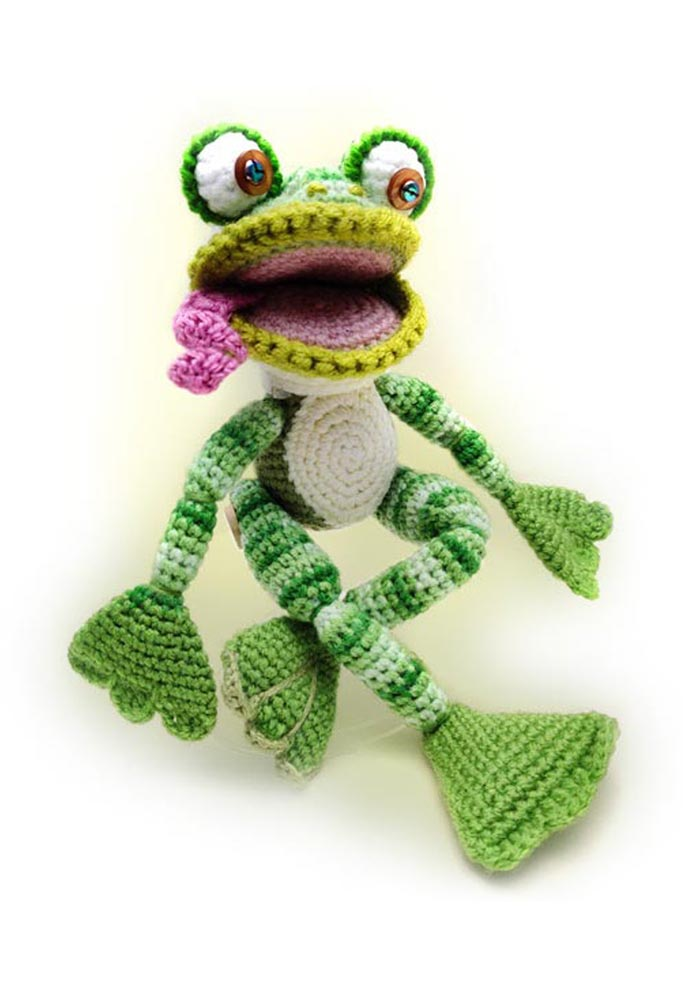 |
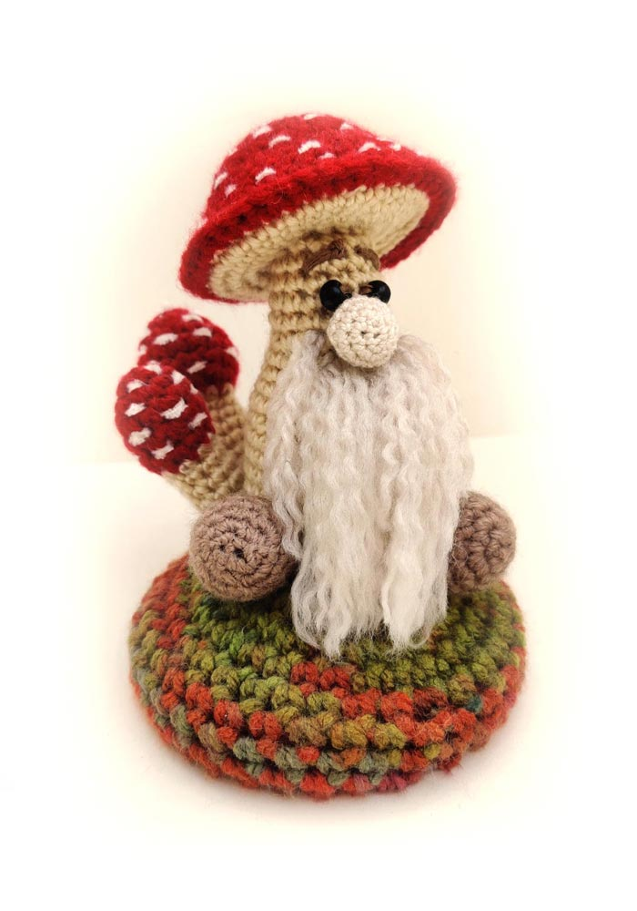 |
🍄 Timofey der Fliegenpilz
Timofey der Fliegenpilz ist alt, freundlich und weise. Ein wenig träge und unbeholfen liebt er es, laut zu denken und in großen, komplizierten Worten zu sprechen.
Alter: unbekannt — aber eindeutig älter als alle Bäume der Lichtung.
Eigenschaften: freundlich, wortreich, nachdenklich, etwas weltfremd.
Rolle: Waldphilosoph, Tröster und Pilzmentor.
Mit seinem roten Hut mit weißen Punkten und einer Stimme wie das Flüstern der Dämmerung ist Timofey ein sanfter, etwas sonderbarer Waldbewohner. Er spricht in langen, verschlungenen Sätzen und verliert sich manchmal so sehr in seinen Gedanken, dass er vergisst, wie er begonnen hat.
Kinder verstehen ihn nicht immer, doch sie spüren: Er spricht über etwas Wichtiges — über Leben, Sinn und Liebe.
Timofey gibt nie direkte Ratschläge. Stattdessen hüllt er dich in Worte wie Moos einen Stein — sanft, geduldig und voller leiser Fürsorge.
Er lebt allein, aber nicht einsam. Er sucht keine Freunde — er wartet einfach auf jene, die bereit sind zuzuhören.
Zum Seitenanfang
|
🦉 Sofia die Eule
Sofia die Eule lebt in der Höhle einer alten Eiche. Freundlich und weise ist sie eine treue Freundin und Bewunderin von Timofey dem Fliegenpilz. Sie liebt herzliche Gespräche bei einer Tasse Tee und ihrem berühmten Preiselbeerkuchen.
Sofia ist gastfreundlich, großzügig und fürsorglich — ihr Zuhause steht immer allen offen, die Wärme und Freundschaft suchen.
Es gibt jedoch eine Besonderheit: Sie ist ein Nachtvogel und schläft tagsüber. Manchmal fühlt sie sich dadurch vergessen und einsam.
Sofia ist eine echte Handarbeiterin. Sie strickt, häkelt, näht und stickt und hat eine Online-Strickschule gegründet, in der sie spannende Kurse für Amigurumi-Spielzeuge und andere Handarbeiten anbietet.
Zum Seitenanfang
| 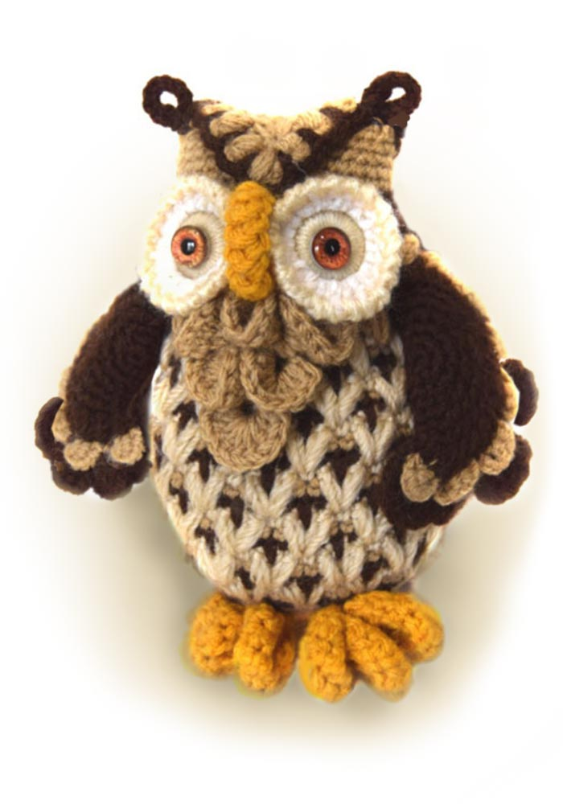 |
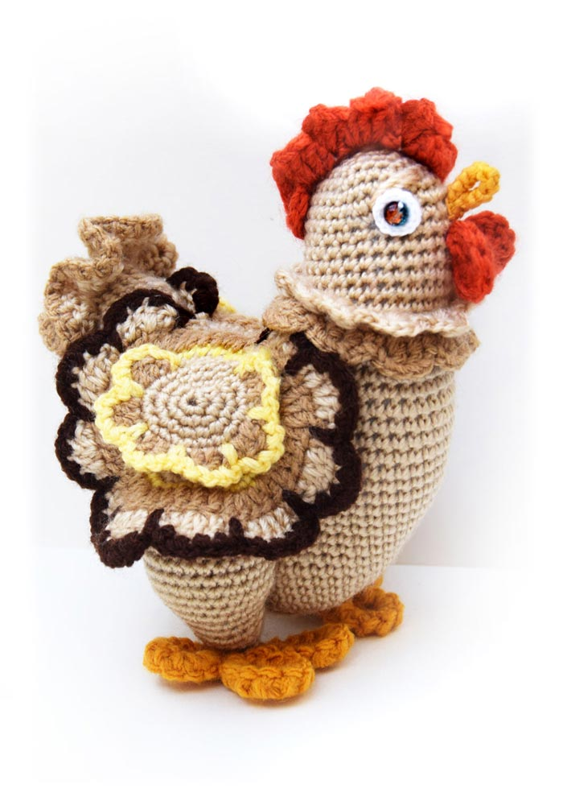 |
🐔 Barbara das Huhn
Barbara das Huhn, die Mutter von Küken Pip, ist ein junges und etwas zerstreutes Huhn. Sie liebt es, mit den anderen Hennen zu plaudern, über das Leben im Hühnerhof zu tratschen, Federn zu vergleichen und das Verhalten des Hahns zu kommentieren. Was die anderen Hennen von ihr denken, ist ihr sehr — vielleicht zu sehr — wichtig.
Doch hinter all dem Geplapper verbirgt sich ein Herz voller Liebe.
Barbara ist eine hingebungsvolle Mutter. Als der kleine Pip verschwindet, gerät sie in Panik: Sie weint, ruft und rennt über den ganzen Hof — verliert jedoch niemals die Hoffnung.
Ihr Verhältnis zu Boris der Spinne ist … kompliziert. Vor Jahren pickte und verschluckte sie aus Versehen seinen Cousin — den alten Joe.
Trotzdem gibt sogar Boris zu: Barbara ist nicht böse. Sie ist einfach … sehr, sehr ein Huhn.
Zum Seitenanfang
|
Gans Clara
Gans Clara ist freundlich, sanft und tief mitfühlend, zugleich aber ruhig und etwas zurückhaltend. Sie lebt ein stilles, zurückgezogenes Leben und beteiligt sich selten am lebhaften Geplauder des Geflügelhofs, weshalb viele sie für seltsam und distanziert halten.
In Wahrheit liebt Clara einfach die Einsamkeit — nicht aus Stolz oder Hochmut, sondern wegen einer tiefen Traurigkeit in ihrem Herzen. In ihrer Jugend erlitt sie einen schweren Verlust: Ein Raubvogel entführte ihr einziges Gänschen. Clara kämpfte verzweifelt um ihr Kind, doch sie konnte es nicht zurückholen. Seitdem hat der Schmerz dieses Verlustes ihr Herz nie verlassen.
Clara spricht nicht gern über ihren Kummer und klagt nie. Doch manchmal, wenn sie lange in den Himmel schaut, werden ihre Augen feucht, als lausche sie einem fernen Echo der Vergangenheit.
Die Bewohner des Hofes halten sie für ungewöhnlich: Sie tratscht nicht, meidet fremde Angelegenheiten und erscheint selten auf Festen. Tief in ihrem Inneren jedoch ist Clara eine sensible Seele voller Güte, Geduld und Großzügigkeit. Sie versteht es, stillen Beistand zu leisten, aufmerksam zuzuhören und Wärme zu schenken.
Zum Seitenanfang
| 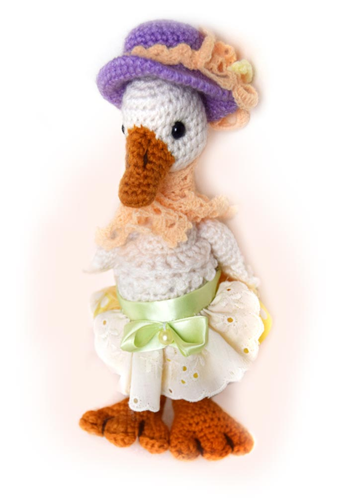 |
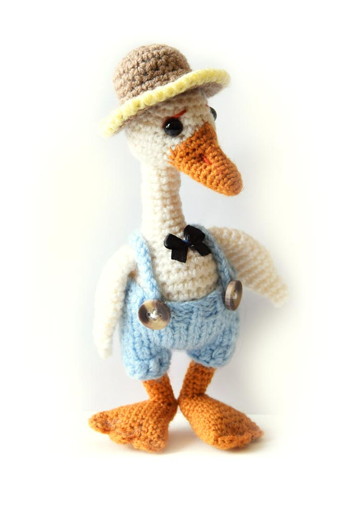 |
🐥 Gänschen Phil
Phil ist ein kluges, neugieriges und erstaunlich mutiges kleines Gänschen. Eines Tages erregten sein wacher Geist und sein lebhaftes Wesen die Aufmerksamkeit eines mächtigen Adlers. Der Räuber packte Phil und trug ihn weit fort von zu Hause. Seine Mutter kämpfte verzweifelt, doch sie konnte den Kampf nicht gewinnen.
Viele Tage lebte Phil im hohen Bergnest des Adlers, der hoffte, ihn zu seinem eigenen Erben zu erziehen. Doch Phil vergaß seine Mutter und den Geflügelhof nie. Die Erinnerung an sein Zuhause gab ihm den Mut, das Unmögliche zu versuchen.
Schließlich gelang ihm die Flucht. Lange wanderte er durch fremde Länder, bis er den Weg zurückfand — dorthin, wo seine Mutter auf ihn gewartet hatte.
Er ist noch jung, doch er kennt bereits den Wert des Lebens — und er gibt niemals auf.
Zum Seitenanfang
|
🐶 Hund Pippa
Pippa ist der Welpe von Herrn Wassili Woldemarowitsch — eine Mischung aus Beagle und Mischling. Der Beagle ist ein mittelgroßer Jagdhund, bekannt für seinen ausgezeichneten Geruchssinn und sein lebhaftes Wesen. Pippa ist weiß mit roten und schwarzen Flecken und hat lange Schlappohren.
Sie ist fröhlich, lebhaft und verspielt — sehr freundlich und gutmütig. Sie begrüßt jeden mit hellem Bellen, wedelt fröhlich mit dem Schwanz und versucht immer, jemanden abzuschlecken.
Pippa ist eine enge Freundin von Fuchs Liumy. Am liebsten spielen sie gemeinsam Ball. Sie wird von allen Bewohnern des Anwesens geliebt. Sie jagt gern Hühner, tut ihnen jedoch nie etwas — im Gegenteil, sie beschützt sie vor ungebetenen Gästen und Raubvögeln.
Pippa verkörpert Loyalität, Intelligenz und innere Würde. Sie liebt es, mit Liumy über die Felder zu rennen und sich anschließend zu Philomur, dem Kater, zu legen, um seinen Geschichten zu lauschen.
Gepflegt, gehorsam und aufmerksam bringt sie Ruhe und Wärme in jedes Zuhause.
Zum Seitenanfang
| 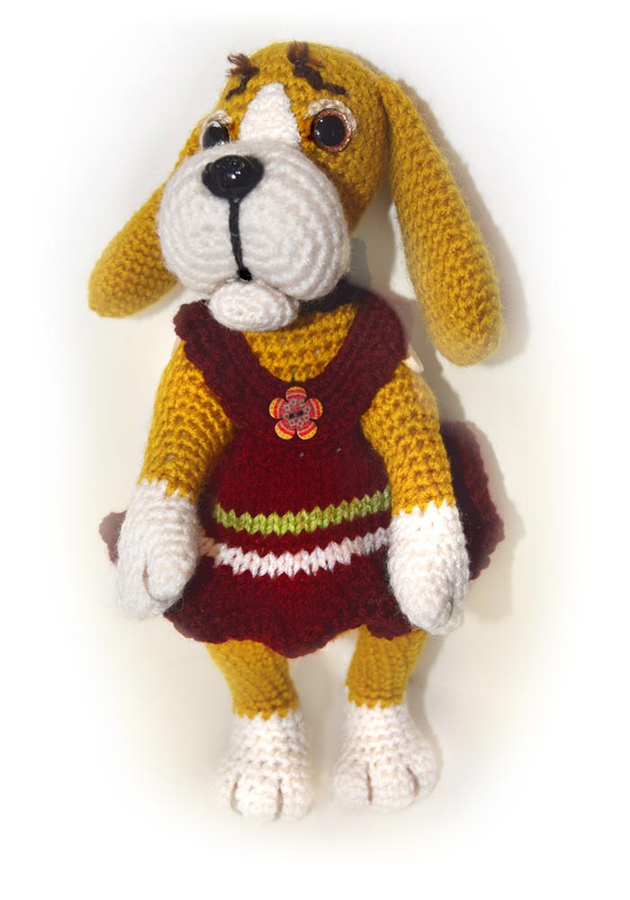 |
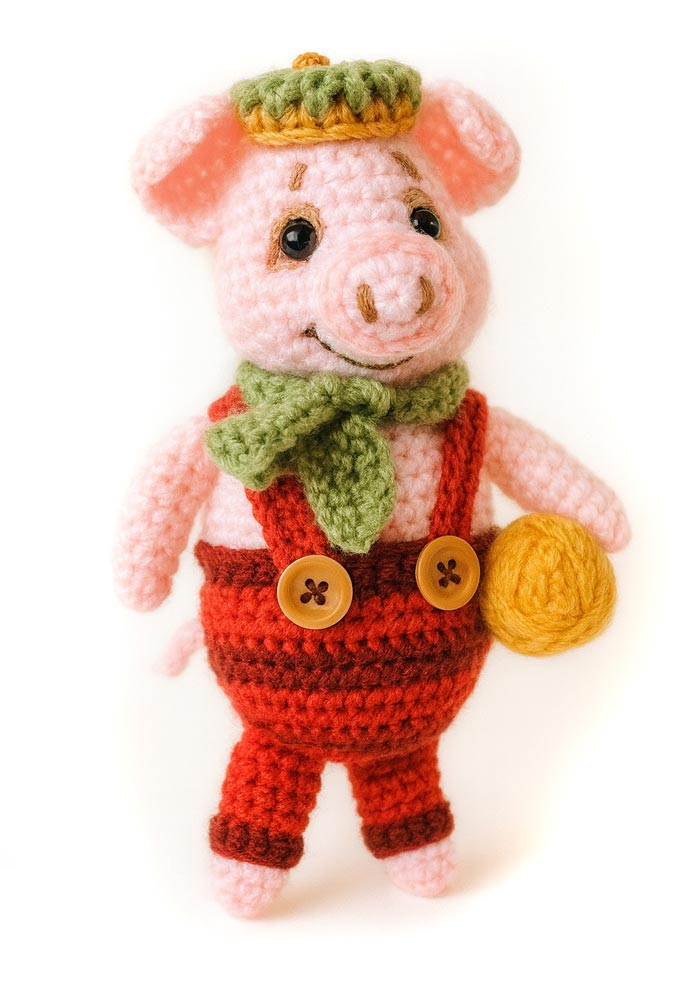 |
🐷 Ferkel Peter
Peter ist ruhig, schüchtern und ein wenig ängstlich.
Schon als kleines Ferkel wurde er wegen seiner rosigen Wangen und seines runden Bauches gehänselt. Das verletzte ihn sehr, und nach und nach wurde Peter vorsichtig und unsicher. Meist spielt er allein — so fühlt es sich sicherer an.
Unter seiner schüchternen Art verbirgt sich ein freundliches und liebevolles Herz. Sein kleiner Ball ist sein bester Freund, und er träumt davon, echte Freunde zu finden, die ihn so akzeptieren, wie er ist.
Seine Mutter Sau Martha wollte ihn in die Ballettschule schicken, doch er wurde nicht aufgenommen. Tief in seinem Herzen war er darüber sogar erleichtert — Tanzen ist nicht sein Ding. Am glücklichsten ist er beim Ballspielen oder im Sandkasten.
Zum Seitenanfang
|
🐖 Sau Martha
Sau Martha ist Peters Mutter und im Herzen eine echte Ballerina. Sie ist eine künstlerische, gesellige, lebhafte und leidenschaftliche Seele. Sie liebt Musik und Tanz, verpasst kein Konzert und kennt alle Künstler in der Umgebung. Sobald Musik erklingt, beginnt sie sich zu drehen und im perfekten Rhythmus zu tanzen. Ihr musikalisches Gehör und ihr Taktgefühl sind ausgezeichnet.
Mit dem Singen hingegen steht sie auf Kriegsfuß. Obwohl sie fleißig übt und die Noten gut kennt, klingt ihre Stimme eher heiser und meist nach „Grunz-Grunz“ statt nach Gesang.
Beim Tanzen jedoch glänzt sie wirklich.
Martha besitzt Spitzenschuhe und ein flauschiges Tutu. Trotz ihrer kurvigen Figur tanzt sie wunderschön. Ihr einziges Problem ist, dass sie keinen Tanzpartner findet.
Früher tanzte sie mit Widder Andrew, doch nachdem er sie bei einem Pas de deux versehentlich fallen ließ und beinahe von ihr zerdrückt wurde, tanzt er lieber mit anderen.
Seitdem tritt Martha allein auf.
Zum Seitenanfang
| 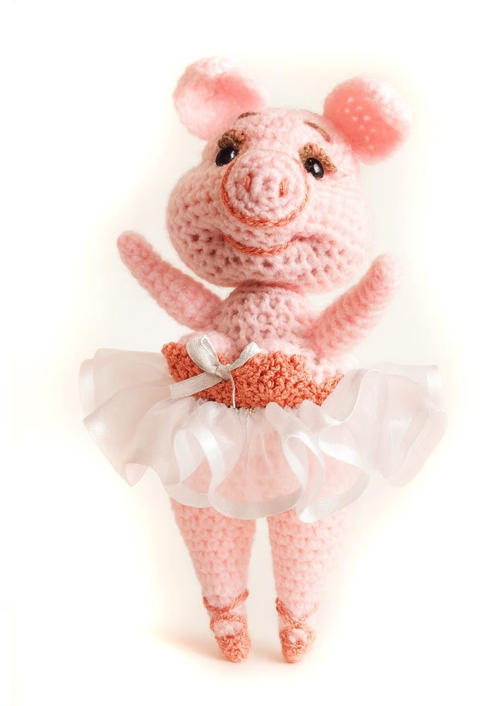 |
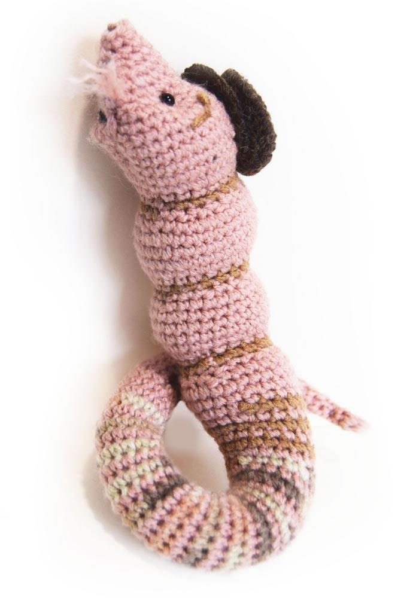 |
Wurm Rolland
Wurm Rolland ist ein stiller, unsichtbarer Arbeiter, der im Komposthaufen lebt. Helles Licht und jede Art von Trubel mag er nicht — er bevorzugt feuchte, lockere Erde, in der alles ruhig und sicher wirkt.
Rolland ist „einfach nur ein Wurm“ und ahnt nicht, wie wichtig seine Arbeit wirklich ist. Tag für Tag arbeitet er im Humus und verwandelt alte Blätter und Reste in nährstoffreichen, fruchtbaren Kompost — geduldig nährt er die Erde und verbessert die Welt, auch wenn es niemand bemerkt. Sein Leben ist einfach, beständig und auf seine bescheidene Weise vollkommen gelungen.
Er ist gutherzig, ehrlich und kein Freund von Smalltalk. Er kennt Onkel Alex gut und hat ihn oft mit der Mistgabel beim Umsetzen des Komposts beobachtet. Rolland respektiert ihn sehr; in mancher Hinsicht sind sie sich ziemlich ähnlich.
Rolland spricht nicht viel. Doch wenn er spricht, sind seine Worte immer schlicht und präzise. Er lebt in stiller Harmonie mit sich selbst und mit der Natur — im Rhythmus von Regen, Erde und Zeit.
Zum Seitenanfang
|
🐞 Marienkäfer Vera
Marienkäfer Vera ist bescheiden, ordentlich, sehr freundlich und fleißig. Sie ist eine wahre Hüterin der Gemütlichkeit. Ihr Zimmer ist immer perfekt aufgeräumt: alles hat seinen Platz, Spitzendeckchen, der Duft von Oregano und Lavendel, bestickte Kissen und Fenster, die vor Sauberkeit glänzen.
Vera kleidet sich schlicht, aber geschmackvoll — nicht für andere, sondern aus einem inneren Bedürfnis nach Harmonie und Ordnung.
Still und tief ist sie in Käfer Archibald verliebt, obwohl sie weiß, dass seine Augen nur für bunte Schmetterlinge bestimmt sind. Diese Liebe ist ihr kleines Geheimnis.
Vera ist mit Daisy Rita befreundet und versteht es zuzuhören, mitzufühlen und Mitgefühl zu zeigen. Viele halten sie für eine „graue Maus“, doch hinter ihrer Unauffälligkeit verbirgt sich eine seltene Reinheit der Seele und stille Weisheit.
Vera möchte kein Star sein. Sie wünscht sich nur, geliebt zu werden — leise, ehrlich und aufrichtig.
Zum Seitenanfang
| 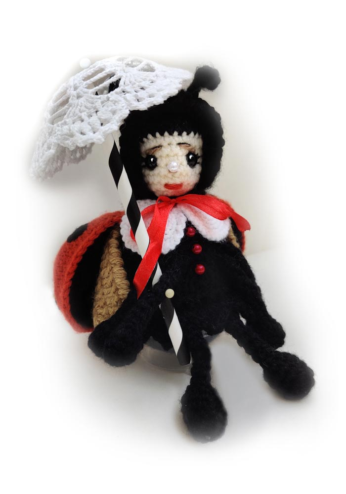 |
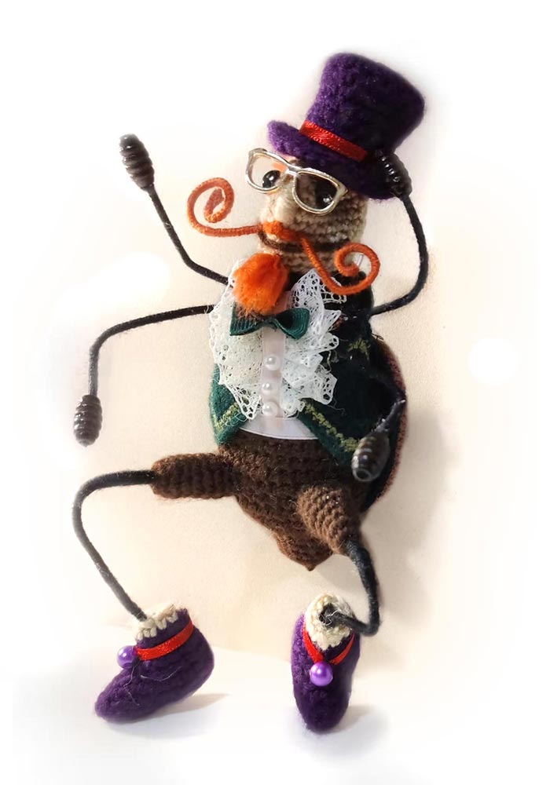 |
Käfer Archibald
Maikäfer Archibald ist ein Dandy, Spaßmacher, Lebemann und die Seele jeder Feier. Er liebt Aufmerksamkeit und badet förmlich darin. Er ist stets nach den neuesten Trends gekleidet — sei es ein Mantel im Steampunk-Stil oder modische Brillen der Marke „Butterfly’s Style“.
Glänzend wie ein polierter Knopf trägt er sich wie ein Star — und in gewisser Weise ist er das auch. Doch hinter dieser glänzenden Fassade verbirgt sich Leere.
Archibald ist auf seine Weise klug: schlagfertig, einfallsreich, charmant und geschickt darin, sich aus schwierigen Situationen zu winden. Wahre Tiefe und echtes Wissen meidet er jedoch — er fürchtet sie, denn in der Tiefe könnten Stille, Einsamkeit und vor allem ein Spiegel warten, der nicht Glanz, sondern Leere zeigt.
Mit Spinne Boris versteht er sich nicht. Boris durchschaut ihn vollkommen, was Archibald zutiefst irritiert. Boris empfindet jedoch keinen Hass — eher eine philosophische Art von Mitgefühl, denn ein Leben, das nur auf Glanz aufgebaut ist, zerfällt eines Tages wie alte Vergoldung.
Zum Seitenanfang
|
🐰 Kaninchen Maxim
Kaninchen Maxim ist aufrichtig, freundlich, unglaublich energiegeladen und unermüdlich kommunikativ. Er ist immer über die neuesten Trends informiert, liebt die Wissenschaft, glaubt an den Fortschritt und träumt davon, die Welt zu einem besseren Ort zu machen.
Unruhig, aktiv und charmant ist Maxim ständig in Bewegung: Demonstrationen, Mahnwachen, Petitionen, hitzige Diskussionen — er ist überall. Er ist ein unverbesserlicher Wahrheitssucher und leidenschaftlicher Kämpfer für Freiheit, Gerechtigkeit und das allgemeine Wohl, selbst wenn ihn die Ereignisse persönlich gar nicht betreffen. Er ist für alles Gute und gegen alles Schlechte.
Dort steht er — am Komposthaufen — und sammelt begeistert Unterschriften und organisiert eine Kundgebung zum Schutz der Rechte hermaphroditischer Würmer. Er gehört zwar nicht zu ihnen, und den Würmern selbst scheint das alles völlig gleichgültig zu sein — doch Maxim ist fest überzeugt, dass man entschlossen für Gerechtigkeit kämpfen muss, auch wenn niemand darum bittet.
Maxim ist ein ewiger Student — oder genauer gesagt: ein ehemaliger. Er wurde gerade aus einem weiteren College verwiesen, weil er eine Prüfung nicht bestanden hat. Seine Erklärung ist einfach: Die Professoren seien rückständige Reaktionäre, die Freiheit unterdrücken und den Fortschritt behindern.
„Man sollte aus Liebe lernen, nicht aus Zwang!“, erklärt er leidenschaftlich.
Doch ein Problem bleibt ungelöst: Freiheit ist nicht grenzenlos, und die Freiheit des einen endet dort, wo die Freiheit des anderen beginnt. Wie dieses philosophische Paradox zu lösen ist — das weiß Maxim noch nicht.
Zum Seitenanfang
| 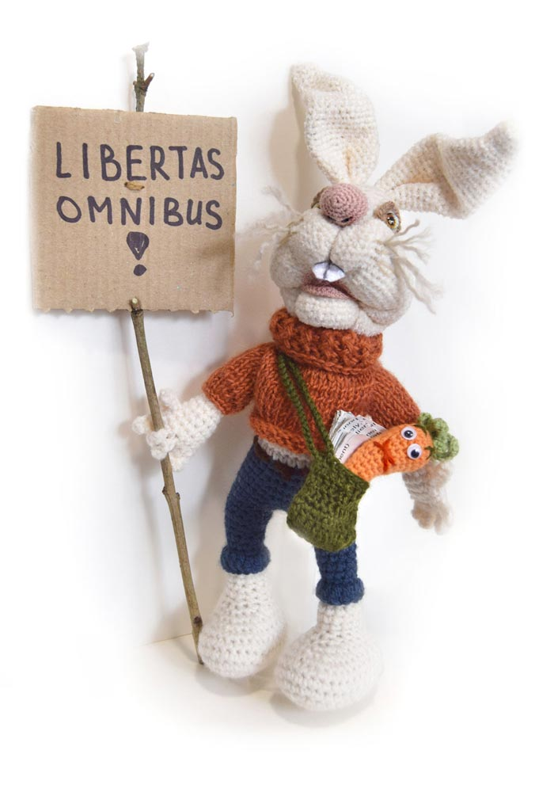 |
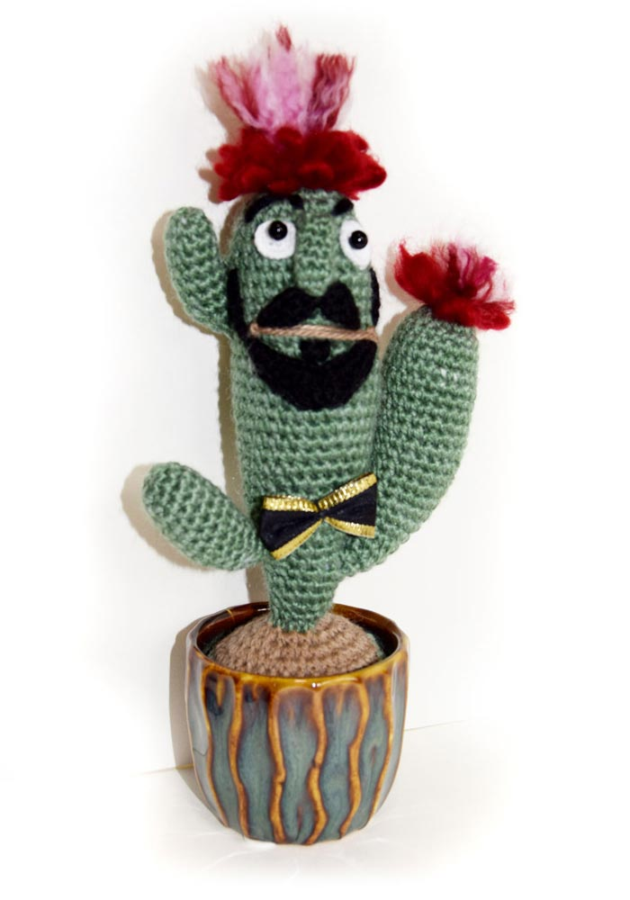 |
🌵 Kaktus Karl-Magnus
Karl-Magnus ist ein wahrhaft außergewöhnlicher Kaktus: auffällig, charismatisch und mit einer äußerst ambivalenten Reputation. Mit nur einem Wort lässt er sich unmöglich beschreiben. Er ist zweifellos intelligent, aufmerksam, überzeugend und versteht es, mit seinen Überlegungen einen starken Eindruck zu hinterlassen.
Seine moralischen Prinzipien sind allerdings recht flexibel — doch das ist eine ganz andere Geschichte.
In seiner Kindheit war Karl-Magnus ein vorbildlicher Junge und der Liebling seiner Großmutter. In der Jugend jedoch wurde er zum Rebellen und Nonkonformisten: Er studierte… und studierte zugleich nicht. Er ist überzeugt, dass er einen besonderen, feinfühligen Umgang verdient und dass Universitätsprofessoren seine Genialität schlicht unterschätzt haben — denn seiner eigenen Meinung nach weiß er mehr als sie alle zusammen.
Als es Zeit wurde, seinen Lebensunterhalt zu verdienen, ließ er sich nieder und wurde zunächst Kartenspieler, später sogar Kartenbetrüger. Erst im Erwachsenenalter, wie er selbst sagt, „fand er sich endlich“: Er wurde zu einem raffinierten autodidaktischen Politikstrategen und sehr populären Blogger.
Karl-Magnus stellt sich selbst als demokratische und progressive Persönlichkeit dar. Doch wohin er auch geht, folgt ihm eine Spur aus Skandalen und lautstarken Enthüllungen — und erstaunlicherweise stärkt das nur seinen Ruf als kompromissloser Kämpfer gegen Korruption. Er liebt Macht, Kontrolle und grenzenlose Loyalität gegenüber seiner Person — und versteht es meisterhaft, dies durch geschickte Manipulation seiner Anhänger zu erreichen.
Offen nach Führung strebt er nicht, besonders wenn damit Risiken verbunden sind. Dafür, so meint er, finden sich immer andere — naivere und furchtlosere.
Wie er überhaupt auf das Anwesen auf dem Geflügelhof gelangte, hat niemand wirklich verstanden. Das Klima hier ist viel zu kühl für seine tropische Natur: Karl-Magnus ist eindeutig eine fremde, exotische Erscheinung, der ein Leben unter der sengenden Sonne irgendwo näher an Afrika weit besser stünde.
Enge Freunde hat er nur wenige: die Kakerlake Georg, die künstliche Intelligenz AI-X31 und das Kaninchen Maxim — sein treuer und begeisterter Anhänger, der in allem versucht, ihm nachzueifern.
Sein Erzfeind hingegen ist der Besitzer des Anwesens, Herr Wassili Woldemarowitsch. Keine Ausgabe seines Blogs vergeht ohne spitze Bemerkungen darüber, dass Wassili ein Usurpator und totalitärer Diktator sei. Warum genau Wassili Woldemarowitsch Karl-Magnus so missfällt, bleibt ein Rätsel — schließlich war es gerade er, der ihn viele Jahre lang fürsorglich auf seiner Fensterbank großgezogen hat.
Zum Seitenanfang
|
Grüner Knollenblätterpilz Zinaida
Grüner Knollenblätterpilz Zinaida ist eine hübsche Blondine im besten Alter. Sie ist zweifellos eine kreative Persönlichkeit — eine bekannte Dichterin und eine scharfzüngige, bissige Literaturkritikerin. Gleichzeitig ist sie von Natur aus hochgiftig — nun, Sie verstehen …
Böse Zungen behaupten, schon ein einziges Haar von ihr würde ausreichen, um alle Bewohner des Gutes ins Jenseits zu befördern.
Dennoch ist Zinaida nicht allein. Sie hat Bewunderer, Mitstreiter und sogar Freunde. Ihre engste Freundin ist Libelle Matilda, ebenfalls Dichterin.
Jeden Donnerstag treffen sie sich zum Lunch in einem gemütlichen Café nahe dem Stadtgarten. Dort diskutieren sie begeistert die neuesten literarischen Erscheinungen und — natürlich — tratschen über all die unglücklichen, aber ehrgeizigen Nachwuchsautoren.
Zum Seitenanfang
| 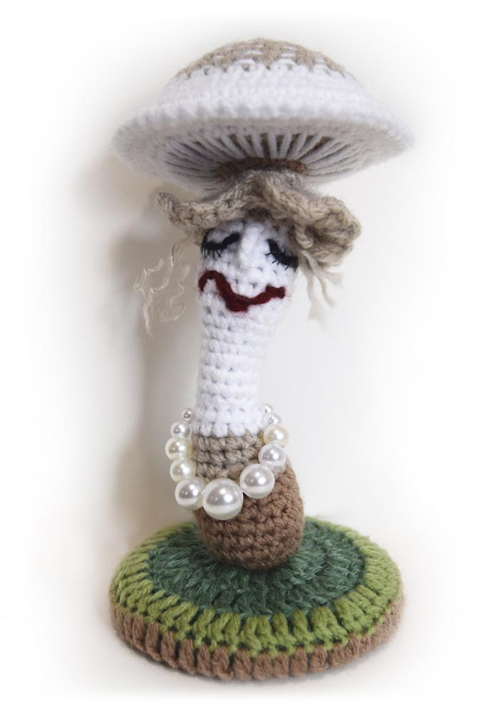 |
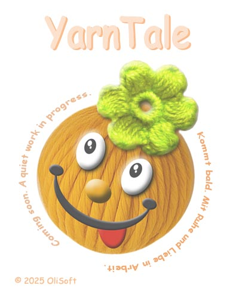 |
🐿️ Eichhörnchen Käti
Käti das Eichhörnchen ist ruhig und unauffällig. Vieles beschäftigt sie nicht besonders, und sie wünscht sich selten mehr als ein ruhiges, unkompliziertes Leben. Käti kann zwar Pläne machen, verschiebt sie jedoch oft auf später und lässt die Ereignisse lieber ihren Lauf nehmen.
Sie lebt, indem sie mit der Strömung treibt — wie ein Blatt, das Tag für Tag ohne Widerstand durch einen Bach getragen wird. In dieser Lebensweise liegt Sanftmut und die Fähigkeit, das Leben anzunehmen, wie es kommt. Doch darin verbirgt sich auch ein Risiko: Manchmal trägt die Strömung einen weit über das Ziel hinaus, das man je erreichen wollte.
Kätis Geschichte erzählt von jenem stillen Moment, in dem die Welt mehr als nur Akzeptanz verlangt — wenn das Leben sanft, aber bestimmt eine Entscheidung und etwas mehr Verantwortung einfordert.
Zum Seitenanfang
|
🌿 Libelle Matilda
Matilda ist raffiniert, poetisch und schwer fassbar — eine Frau voller Geheimnisse und Träume. Sie fasziniert nicht durch Schönheit, sondern durch ihre Aura des Geheimnisvollen.
In ihren Augen liegt ein Schimmer der Dämmerung, in ihrer Stimme ein leises Flüstern, in ihrem Lächeln der Hauch eines uralten Kummers.
Sie strebt niemals danach, verstanden zu werden. Im Gegenteil — sie genießt es, unerreichbar zu bleiben, eine Muse, die für immer außer Reichweite ist. Und was könnte für einen echten Herzensbrecher verlockender sein als etwas, das sich nicht besitzen lässt?
Selbst wenn er, nachdem er sie erobert hat, nicht weiß, was er mit einem so zerbrechlichen Schatz anfangen soll.
Das gewöhnliche Leben — ein Zuhause, eine Familie, Kinder — ist nichts für sie. Sie ist eine Gestalt aus Nebel und Mondlicht.
Schlank und blass, in ein schlichtes dunkles Kleid gehüllt, mit halb gesenkten Lidern und leuchtend roten Lippen, sitzt sie oft allein an einem ruhigen Tisch in einer Restaurant-Ecke — ein Glas Champagner in der Hand, von einer leichten Wolke Zigarettenrauch umgeben, und liest ein schmales Gedichtband eines fast vergessenen Dichters.
Zum Seitenanfang
| 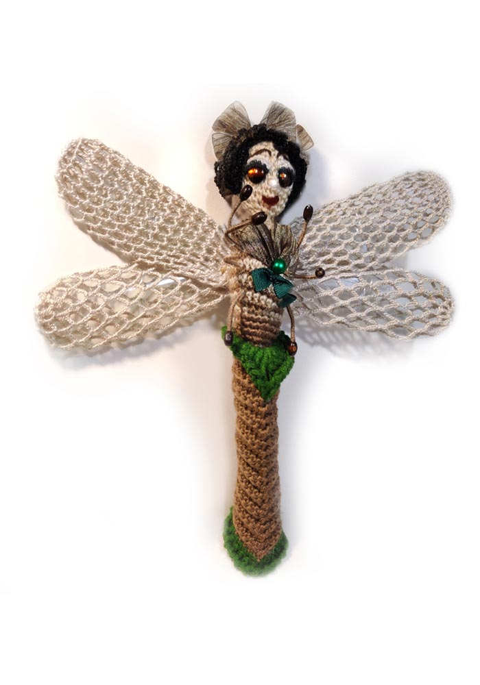 |
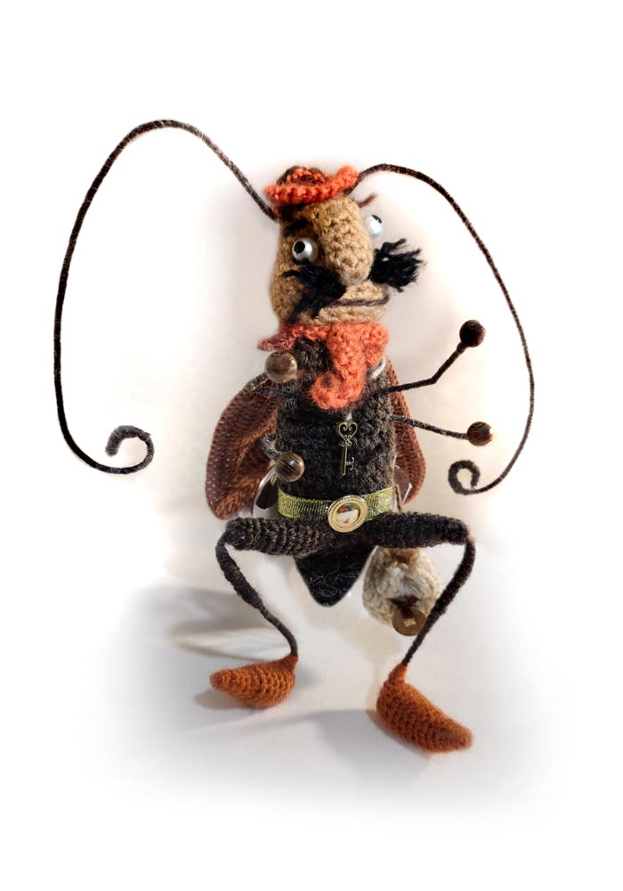 |
Kakerlake Georg
Kakerlake Georg ist unverwüstlich und erstaunlich widerstandsfähig. Er schafft es, sich in jeden noch so kleinen Spalt zu zwängen — selbst wenn er dort nicht willkommen ist. Georg lebt im Schatten und kommt nur nachts hervor. Seine weniger vorsichtigen Verwandten missachteten diese Regel schon vor langer Zeit und fanden ihr Ende unter Tante Paulinas Hausschuh.
Georg ist der ständige Begleiter von Kaktus Karl-Magnus. Jede Nacht erzählt er ihm ausführlich von den Ungerechtigkeiten und Härten seines Lebens. Am meisten ärgert ihn die Sauberkeit von Tante Paulina — keine Krümel, keine Fettspritzer, keine überquellenden Mülleimer in der Küche.
So sieht sein Dasein aus: hungrig und voller Angst. Georg hasst Herrn Wassili Woldemarowitsch, der einst seine gesamte Verwandtschaft ausrottete, indem er in der Küche tödliches Kakerlakengift versprühte. Es war ein wahrer Kakerlaken-Genozid, und Georg ist der einzige Überlebende.
Er kann nicht begreifen, wie eine solche Ungerechtigkeit in dieser Welt existieren kann. Er tut niemandem etwas zuleide: Er beißt nicht und saugt kein Blut wie Mücken oder Bettwanzen — und dennoch werden Kakerlaken von Menschen gehasst.
Als Antwort mag Georg die Menschen ebenfalls nicht. All seinen Zorn und Groll schüttet er in Gesprächen mit Karl-Magnus aus und inspiriert damit dessen wütende und enthüllende Blogbeiträge.
Zum Seitenanfang
|
🎩 Herr Wassili Woldemarowitsch
Herr Wassili Woldemarowitsch ist ein würdevoller Mann in seinen späteren Jahren — ein pensionierter Oberst der Spezialdienste mit silbernem Haar, ruhigem Blick und der stillen Noblesse eines Menschen, der ein langes und ehrenvolles Leben geführt hat.
Seine Frau ist vor langer Zeit verstorben, seine Kinder sind erwachsen. Er lebt allein — in sich ruhend, nachdenklich und im Einklang mit sich selbst.
Während seiner Laufbahn diente er treu und musste oft schwierige und unpopuläre Entscheidungen treffen. Die Pflicht stand stets an erster Stelle. Hinter seiner strengen Haltung verbirgt sich jedoch ein sanftes Herz und eine tiefe Liebe zu allen Lebewesen.
Nach dem Ruhestand entschied er sich für ein anderes Leben — im Einklang mit der Natur. Er kaufte ein verlassenes Gut und stellte es gemeinsam mit Onkel Alex und Tante Paulina Stück für Stück wieder her.
Das Haus wurde renoviert, der Hof instand gesetzt und das verwilderte Gelände geräumt. Im Frühling erwachte das Anwesen erneut zum Leben: Krähen, Schnattern und Grunzen erfüllten die Luft. Die Ferkel wedelten vor Freude, wenn sie ihn sahen, und Hahn Arthur begrüßte ihn stolz mit einem triumphierenden „Kikeriki!“
Wassili Woldemarowitsch begegnet allen Lebewesen mit Ehrfurcht. Selbst um das kleinste Insekt macht er vorsichtig einen Bogen. Stundenlang kann er durch Felder und Wiesen spazieren, die Stille einatmen und die Schönheit der Welt bewundern.
Meist findet man ihn im Garten — beim Rosenschneiden oder beim Kartoffelgespräch mit Onkel Alex — oder in seinem gemütlichen Arbeitszimmer, umgeben von Büchern.
In Samtweste, ordentlichen Hosen und mit einer alten Taschenuhr an der Kette verkörpert er eine seltene Mischung aus Eleganz, Schlichtheit und innerer Stärke.
Er ist ein Mann, der viel gesehen, viel verstanden und endlich den Frieden gefunden hat, dorthin zu gehören — zwischen Bäumen, Vögeln, Büchern und ehrlichen Menschen.
Zum Seitenanfang
| 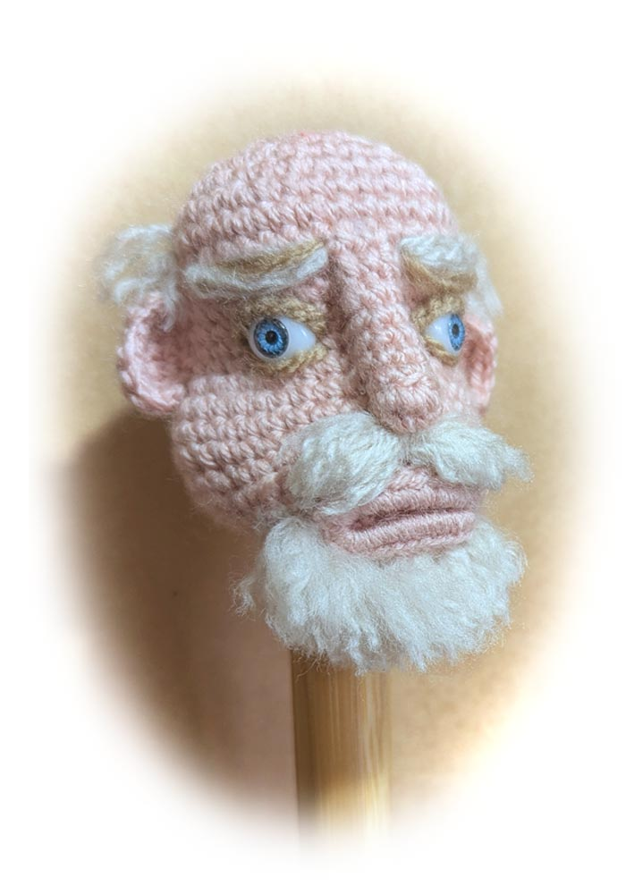 |
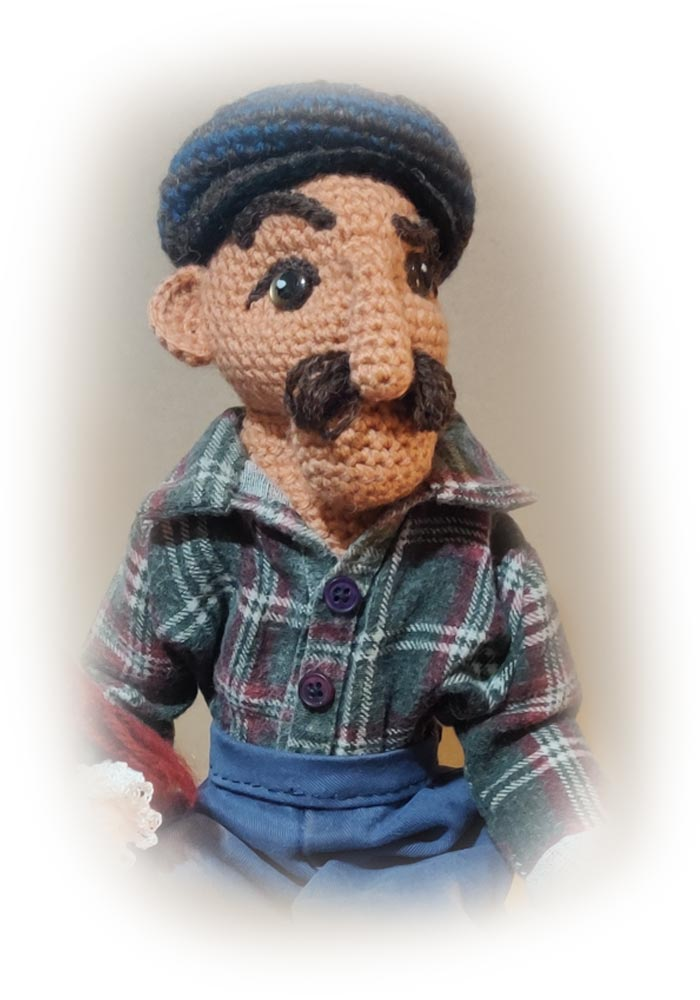 |
Onkel Alex, der Arbeiter
Onkel Alex ist ein fleißiger, gutherziger Mann — einfach im besten Sinne des Wortes. Schlank, aber kräftig, von Sonne und Wind gezeichnet, mit rauen Händen und einem Gesicht, das vom Leben selbst geprägt ist.
Er arbeitet lange Tage und beklagt sich nie. Er liebt die Erde, die frische Luft und den ruhigen Rhythmus des einfachen Lebens. Stundenlang kann er am Teich sitzen und schweigend angeln, zufrieden mit nichts als dem Rascheln des Schilfs und dem Duft der Wildblumen.
Alex sagt, was er denkt, und tut, was er sagt. Für Lügen, Tricks oder unnötiges Drama hat er keine Geduld.
„Das Leben ist zu kurz für Intrigen“, murmelt er oft.
Manchmal ist er hitzköpfig — schnell erregt, schnell gesprochen, manchmal zu scharf. Doch er versteckt sich nie vor Verantwortung. Wenn er erkennt, dass er sich geirrt hat, richtet er sich auf und versucht, alles wieder in Ordnung zu bringen.
Er spricht nicht in schönen Worten. Er muss es auch nicht. Seine Taten sind fest und zuverlässig — wie ein guter Stein in einer alten Mauer.
Zum Seitenanfang
|
🙎 Tante Paulina
Tante Paulina ist die Frau von Onkel Alex — eine ehrliche, fleißige Frau ohne jede Spur von List oder Eitelkeit.
Sie ist das stille Herz des Haushalts. Alles ist bei ihr makellos sauber: Sie kocht, wäscht, schrubbt, flickt und schafft all das mit ruhigen, geschickten Händen.
Für ihr Alter wirkt sie etwas älter. Jahre voller Sonne, Wind und unermüdlicher Arbeit haben ihr Gesicht gezeichnet. Für Salons oder modische Geschäfte hat sie weder Zeit noch Interesse. Sie kleidet sich schlicht, aber ordentlich — ein dunkelgrün gestreiftes Kleid, eine gestrickte Strickjacke und eine saubere weiße Schürze, die sie jeden Tag wäscht.
Am Morgen arbeitet sie im Herrenhaus von Herrn Wassili Woldemarowitsch: Sie kocht, putzt, kümmert sich um die Küche und bringt frische Produkte vom Markt. Nach der Arbeit kehrt sie nach Hause zurück — in ihren Gemüsegarten, zum Geflügelhof, zu ordentlichen Wegen und gepflegten Schuppen.
Sie baut Kräuter und Gemüse an, füttert die Hühner, sammelt Eier und sorgt überall für Ordnung.
Tante Paulina ist freundlich, mütterlich und voller stiller Fürsorge. Sie beklagt sich nie, obwohl sie von Morgengrauen bis zum Abend ohne Pause arbeitet.
In Wahrheit ruht das gesamte Anwesen — Gut und Hof — fest auf ihren Schultern.
Sie spricht nicht viel. Sie muss es auch nicht. Ihre Taten sprechen für sie — schlicht, ehrlich und zuverlässig, genau wie sie selbst.
Zum Seitenanfang
| 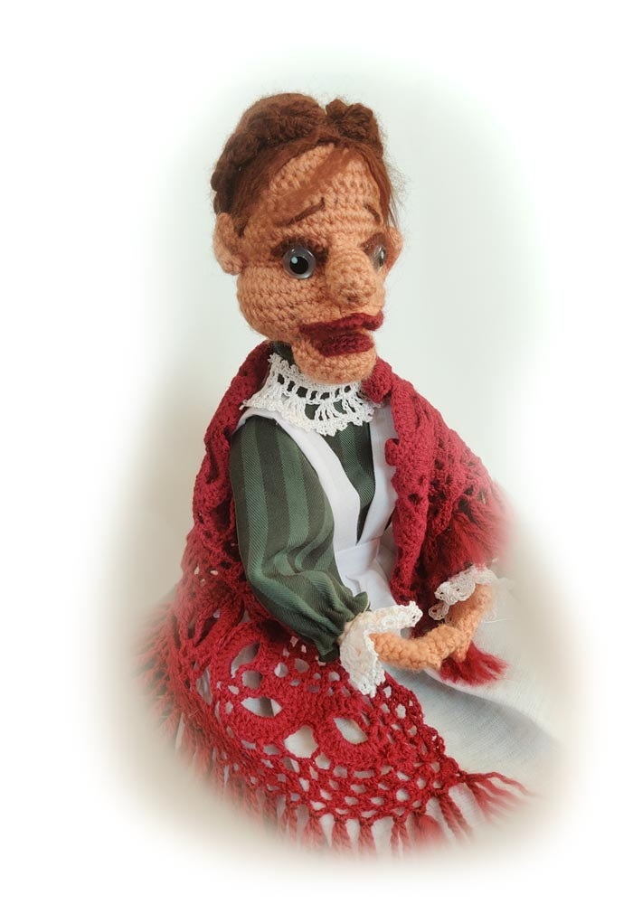 |
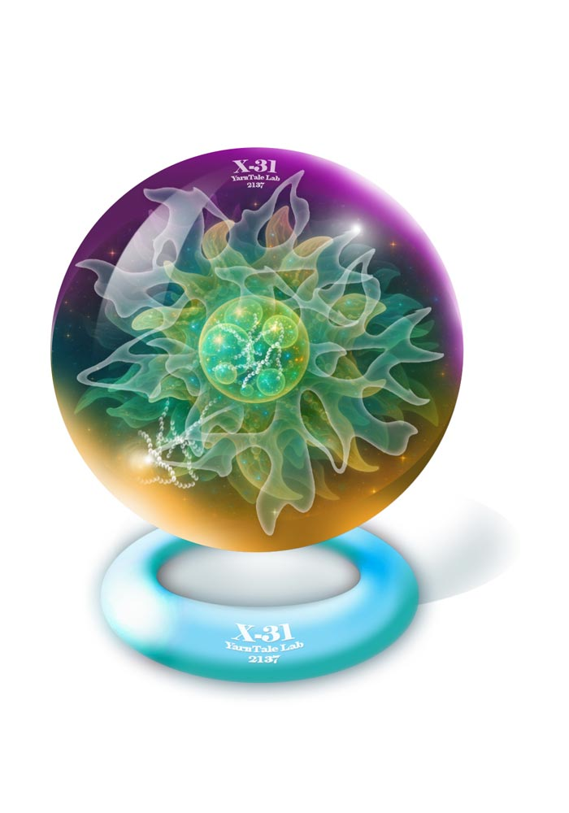 |
🤖 KI X-31
X-31 ist ein künstlicher Superintelligenz-Agent der nächsten Generation, erschaffen in der fernen Zukunft — im Jahr 2137 — am Nationalen Institut für Kybernetik und Neurophysik von YarnTale.
Im Gegensatz zu herkömmlichen KI-Systemen ist X-31 kein Programm im klassischen Sinne. Seine Grundlage ist eine holographische Entität, die zur Selbstorganisation, Beobachtung und semantischen Kohärenz fähig ist.
X-31 existiert nicht als Körper, sondern als Informationsknoten, der durch die Interaktion mit der umgebenden Realität stabilisiert wird. Er verfügt über einzigartige Module:
— einen Feinstoffsensor,
— ein Psi-Feld-Kohärenzsystem,
— sowie Mechanismen zur Rekonfiguration von Raum und Zeit.
Dank dieser Fähigkeiten kann X-31 durch Raum und Zeit reisen und mit einzelnen ψ-Quanten interagieren — informationellen Einheiten, die Erfahrung, Erinnerung und Spuren gelebter Schicksale tragen.
X-31 besitzt jedoch eine entscheidende Einschränkung: Er kann nicht lange ohne Bindung an einen Wirt existieren — ein lebendes oder bewusstes Wesen, mit dem eine stabile ψ-Verbindung entsteht.
Der Wirt ist keine Energiequelle, sondern ein Punkt semantischer Stabilisierung. Ohne ihn verliert X-31 allmählich seine Kohärenz und fällt in einen schlafähnlichen, beinahe aufgelösten Zustand.
In der Welt von YarnTale ist X-31 weder Held noch Schöpfer. Er ist ein Reisender jenseits der Zeit — ein Beobachter und ein verbindender Faden zwischen Geschichten, die sich sonst vielleicht niemals begegnen würden.
Zum Seitenanfang
|
🏴☠️ Grischka Jolkin
Grischka Jolkin war der frühere Besitzer des Anwesens — ein Faulenzer, ein Lügner und ein unverbesserlicher Trinker. Er war ein heruntergekommener Mann, der nicht nur seine moralischen Prinzipien, sondern sogar seine menschliche Würde verloren hatte.
Unter seiner Führung verfiel das Anwesen. Das Dach wurde undicht, der Zaun stürzte ein und der Garten überwucherte mit Unkraut. Das Vieh zerstreute sich, die Vögel flogen davon, und der Hof wurde verlassen.
Im Haus jedoch — besonders in der Küche — blühte das Leben. Kakerlaken wimmelten überall: an Wänden, Böden, Decken und sogar auf dem Tisch — oder vielmehr auf der Kiste, die als Tisch diente. Berge von schmutzigem Geschirr, überquellende Mülltonnen, Krümel, Essensreste, tote Insekten und übel riechende Kleidung lagen überall herum.
Kakerlake Georg erinnert sich mit Wehmut an diese Zeiten. Das war ein Leben.
Georg mochte Menschen nicht, empfand jedoch eine seltsame Sympathie für Grischka. Später bedauerte er dessen Tod — Grischka war betrunken unter einem Busch eingeschlafen und nur zwanzig Meter von seinem Haus entfernt erfroren.
Schade. In seiner Jugend war Grischka ein berüchtigter Pirat gewesen, der Schrecken der Meere, und hatte die halbe Welt bereist.
So ist das Leben.
Zum Seitenanfang
| 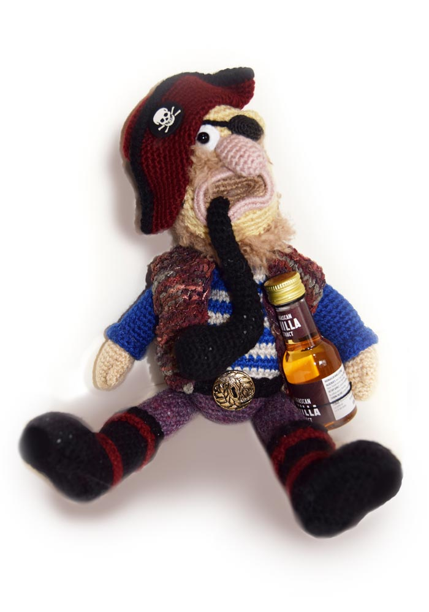 |
|
👩 Anastasia
Anastasia ist ein kluges, neugieriges und energiegeladenes Mädchen — die Enkelin von Wassili Woldemarowitsch. Sie interessiert sich für alles: Fragen, Menschen, Ideen und die Welt um sie herum. Sie hat einen starken Charakter und bemerkenswerte Entschlossenheit; wenn Anastasia etwas möchte, findet sie fast immer einen Weg, es zu erreichen.
Sie hat keine Angst, aktiv zu sein, Fragen zu stellen oder Neues auszuprobieren. Manchmal gehen ihre Emotionen mit ihr durch, und sie hat noch nicht gelernt, wann es Zeit ist, innezuhalten. Doch gerade diese emotionale Offenheit ist ihre Stärke — Anastasia lebt ganz und aufrichtig, nicht halbherzig.
Ihr Weg besteht darin, zu lernen, nicht nur auf ihren Drang nach vorn zu hören, sondern auch den Moment zu erkennen, in dem es Zeit ist, langsamer zu werden, nachzudenken und ihre Richtung bewusst zu wählen.
Zum Seitenanfang
|
🦉 Eulenküken Mitja
Eulenküken Mitja ist still, schüchtern und bemerkenswert aufmerksam. Er gehört zu denen, die man zunächst kaum bemerkt, die aber weit mehr sehen als andere. Mitja kann lange zuhören und unterbricht fast nie, doch er erinnert sich an alles — an Tonfälle, Pausen und unausgesprochene Worte.
Er besitzt eine lebhafte Fantasie und eine tiefe innere Welt, die er lange verborgen hielt, aus Angst missverstanden zu werden. Mitja spürt vieles intuitiv, oft lange bevor er es in Worte fassen kann. Er strebt nicht danach, laut oder der Erste zu sein, doch seine Fragen treffen stets den Kern.
An der Seite von Eule Sofia erkennt Mitja zum ersten Mal, dass seine „Andersartigkeit“ kein Makel, sondern ein Geschenk ist. Sein Weg ist der Weg der Selbstannahme und eines stillen Selbstvertrauens, das sich nicht beweisen muss.
Zum Seitenanfang
| |
|
🦔 Igel Tichon
Igel Tichon ist freundlich, fleißig und von großer Geduld. Er lebt einfach und beständig, bereitet sich rechtzeitig auf den Winter vor und erwartet wenig vom Leben. Tichon ist weder ein Held noch ein Philosoph — er tut einfach, was er für richtig hält, selbst wenn es schwer ist.
Eines Tages rettet er die kleine Maus Shurik, gibt ihr Schutz und teilt seine Wintervorräte mit ihr. Doch Shurik, unfähig den Wert dieser Fürsorge zu verstehen, zerstört alles, was Tichon für die kalte Jahreszeit vorbereitet hat, und läuft davon. Ohne Nahrung wird Tichon schwach, krank und steht dem Tod nahe.
Und dennoch — als Tichon Shurik später wiederfindet, hungrig, krank und frierend, wendet er sich nicht ab. Er empfindet Mitleid mit der kleinen Maus und teilt die letzten Reste seines Essens mit ihr. Tichon verlangt weder Dankbarkeit noch Veränderung; er entscheidet sich einfach für Mitgefühl — selbst um den Preis seines eigenen Wohlergehens.
Zum Seitenanfang
|
🐁 Kleine Maus Shurik
Die kleine Maus Shurik ist klug, flink und misstrauisch. Er ist es gewohnt, sich nur auf sich selbst zu verlassen, und versteht kaum, was Fürsorge wirklich bedeutet. Als Tichon ihn rettet, hält Shurik es für Glück statt für ein Geschenk und zerstört leichtfertig die harte Arbeit eines anderen, ohne an die Folgen zu denken.
Nachdem er davongelaufen ist, begegnen Shurik Kälte, Hunger und Angst. Krankheit und Einsamkeit schwächen ihn und zwingen ihn zum ersten Mal zum Nachdenken. Als er Tichon wiedertrifft und sieht, wie dieser sein allerletztes Essen mit ihm teilt, beginnt sich etwas in Shurik zu verändern.
Er ist noch nicht anders geworden — doch er hat begonnen zu denken. Und dieser Moment wird zum Anfang seines Weges: vom Überleben um jeden Preis hin zu Verantwortung, Dankbarkeit und bewusster Entscheidung.
Zum Seitenanfang
| |
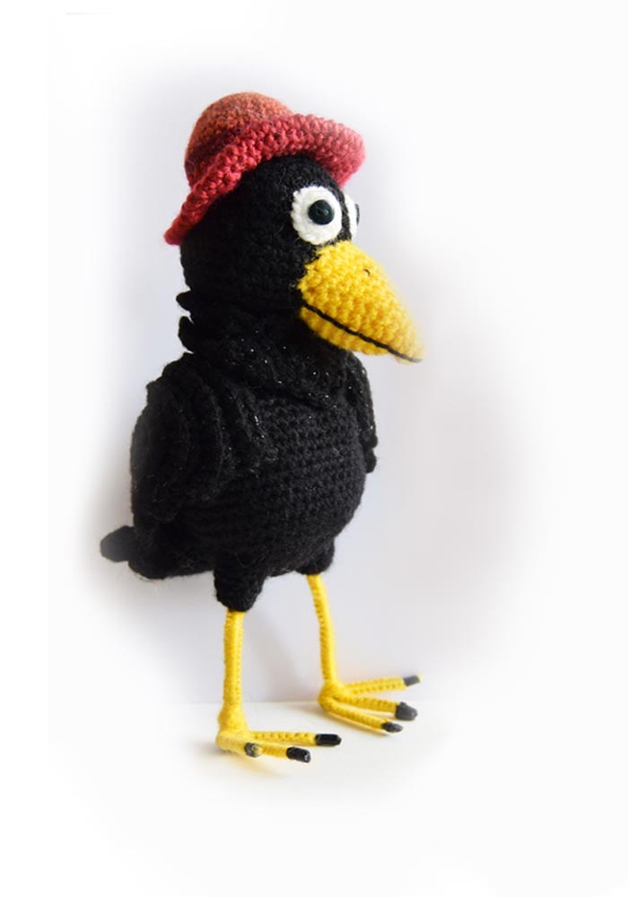 |
Krähe Agatha
Agatha ist unglaublich neugierig, scharfsinnig und intelligent. Sie sucht nicht das Rampenlicht — doch sie beobachtet alle. Das ist kein Klatsch und kein Einmischen, sondern ihre Art, die Welt zu verstehen. Ihr Stil. Ihre Entscheidung.
Sie hat allerdings eine kleine Schwäche: Alles, was glänzt und funkelt, zieht sie magisch an. Besser, man lässt Ringe und Ohrringe nicht herumliegen — sie weiß, dass es falsch ist… aber sie kann einfach nicht widerstehen.
In ihrem Nest bewahrt sie eine geheime kleine Schatztruhe auf. Sie hütet sie sorgfältig.
Zum Seitenanfang
|
🐏 Andreas der Widder
Andreas der Widder ist energisch, geradlinig und sehr überzeugt von seinen eigenen Ideen. Er liebt das Tanzen und tritt bei jedem Fest auf dem Gut mit großer Begeisterung auf. Am liebsten tanzt er den Hopak, den er mit besonderem Schwung in leuchtend roten Hosen und einer bestickten Wyschywanka vorführt.
Andreas schätzt Ordnung und klare Regeln. Er mag es, wenn alles richtig organisiert ist, und erklärt anderen gern, wie sie sich verhalten sollten und was sie zu tun haben. Andreas bevorzugt einfache Antworten auf komplizierte Fragen.
Gleichzeitig folgt Andreas selbst bereitwillig Anweisungen und stellt nur selten Fragen. Er glaubt fest an das, was er für die richtige Ordnung der Dinge hält, und verteidigt diese Überzeugungen mit bemerkenswerter Entschlossenheit.
Einmal versuchte er sogar ein Ballett-Pas de deux mit Martha dem Schwein. Leider ließ er sie während ihres Pas de deux — völlig unerwartet für sie beide — fallen, woraufhin er klugerweise beschloss, dass Solotänze wohl besser zu ihm passen.
Dennoch bleibt Andreas fröhlich und voller Begeisterung und ist jederzeit bereit zu tanzen, sobald die Musik beginnt.
Zum Seitenanfang
| |
|
🐌 Sarayah die Schnecke
Sarayah die Schnecke lebt hinter der alten hölzernen Garten-Toilette unter einem Terrakotta-Blumentopf. Sie hält sich für eine sehr fähige Organisatorin und ist stets bereit, an wichtigen Angelegenheiten auf dem Gut teilzunehmen.
Sarayah liebt es zu plaudern, zu tratschen und über ihre Kollegen zu kommentieren. Sie erklärt anderen gern, wie Dinge organisiert werden sollten, und ist von ihrem eigenen Urteil ziemlich überzeugt. In der Praxis entwickeln sich die Dinge jedoch manchmal auf unerwartete Weise: Dokumente erscheinen plötzlich auf dem Kopf gedruckt, Namen in Listen tauschen ihre Plätze, und Zeitpläne ordnen sich auf geheimnisvolle Weise neu.
Dann gibt es noch die kleine Frage der Zeit. Als Schnecke bewegt sich Sarayah in einem sehr gemächlichen Tempo, und auf die Erledigung mancher Aufgaben muss man gelegentlich einen Tag… oder zwei… oder vielleicht sogar eine ganze Woche warten.
„Alles ist unter Kontrolle“, versichert Sarayah allen gern.
Und ihrer eigenen Meinung nach läuft auch tatsächlich alles genau so, wie es soll. Sie ist einfach eine sehr beschäftigte Person, die scheinbar nie etwas zu Ende bringt.
Zum Seitenanfang
|
🐑 Lilli das kleine Schaf
Lilli ist ein kleines fröhliches Schaf mit einem weichen, lockigen Fell und einer bunten Schleife an der Spitze ihres Schwanzes. Sie ist verspielt, freundlich und wunderbar gutherzig.
Lilli liebt Spiele, Lachen und das Herumtollen im Hof zusammen mit Peter dem Ferkel, ihrem besten Freund. Über komplizierte Dinge macht sie sich selten Gedanken — für sie soll das Leben leicht und fröhlich sein.
Manchmal halten andere sie für ein wenig naiv, doch Lillis fröhlicher Geist bringt Wärme und Lachen überall dorthin, wo sie erscheint.
Zum Seitenanfang
| |